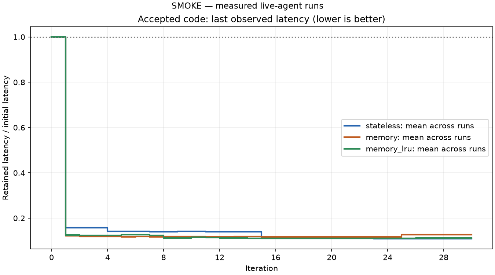
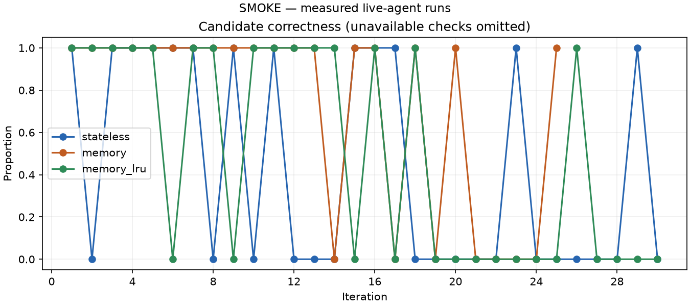

smoke-chat-measured-e6ab8e8c86e6-single
SMOKE — measured live-agent runs. Independent runs: 3. LRU capacity: 6. Means over complete runs.
| arm | final_remeasurement_score_ms | baseline_speedup | accepted_changes | correctness_pass_rate | repeated_unsuccessful_approaches | input_tokens | output_tokens |
|---|
| stateless | 0.4916 (n=1) | 9.175 (n=1) | 3 (n=1) | 0.3929 (n=1) | 0 (n=1) | 9.499e+05 (n=1) | 1.271e+05 (n=1) |
| memory | 0.5361 (n=1) | 8.576 (n=1) | 3 (n=1) | 0.72 (n=1) | 21 (n=1) | 1.357e+06 (n=1) | 1.058e+05 (n=1) |
| memory_lru | 0.5137 (n=1) | 8.797 (n=1) | 2 (n=1) | 0.5 (n=1) | 16 (n=1) | 1.105e+06 (n=1) | 8.615e+04 (n=1) |


Summary · Replicate comparisons · LRU usage · Attempts · Runs